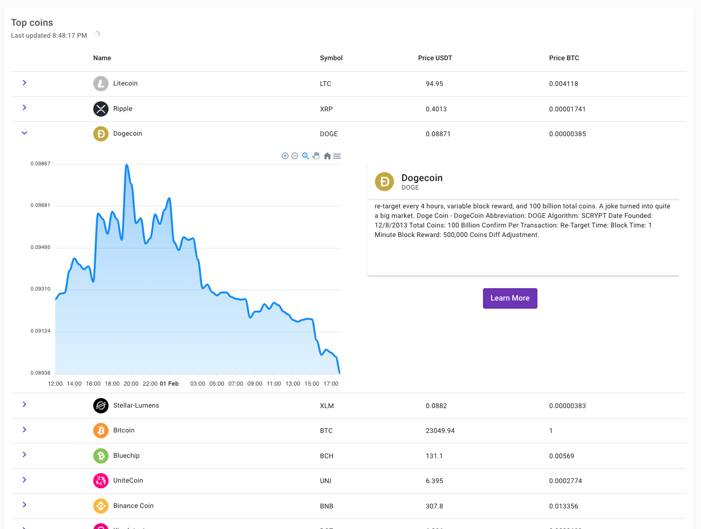

Facultatea de Informatică - Universitatea Alexandru Ioan Cuza
Abstract - What is CryK
This report serves as a user-guide for the Cryptocurrency Knowledge Manager Web Application,
showcasing three use-cases of the service.
The purpose of the application is to provide users with a platform where they can learn about
cryptocurrencies, as well as to provide them with a platform where they can follow their favorite
cryptocurrencies and view the real-time price of their favorite cryptocurrencies as well as others.
Startup
When accessing the web application for the first time, you land on the Dashboard Page. This page
contains a list of the most popular cryptocurrencies, each with its price in USDT, as well as the price in BTC.
The Dashboard Page is the default page for the application.
Dashboard page
Dashboard Page
Besides showing the most popular cryptocurrencies, each item in the list is expandable, and when expanded,
it shows a chart with the price of the cryptocurrency filtered by 30 minutes, as well as a short description
of the cryptocurrency. The chart is interactive, and you can zoom in and out of the chart, as well as move
the chart to the left and right. All the prices on this page are real-time prices, and they are updated every
3 seconds.

Dashboard page expanded
Browse Page
The Browse Page is the page where you can find all the cryptocurrencies available on the application. You can
search for a cryptocurrency by name, or by symbol. The search is case-insensitive, and it is done in real-time.
The search results are shown in a suggestion box below the search bar. The search results are clickable, and
when clicked, they redirect you to the cryptocurrency's page. The list is also filtered by the search results,
so you can see only the cryptocurrencies that match your search. The list is also paginated, and you can
navigate through the pages using the pagination buttons at the bottom of the list as well as change the
number of items per page.
Browse page
Details Page
The Details Page is the page where you can find all the details about a cryptocurrency. You can access this page
by clicking on a cryptocurrency from the Browse Page, or by clicking on a cryptocurrency from the Dashboard Page.
The Details Page contains a chart with the price of the cryptocurrency, as well as a short description of the cryptocurrency.
The chart is interactive, and you can zoom in and out of the chart, as well as
move the chart to the left and right. All the prices on this page are real-time prices, and they are updated every
3 seconds.
Under the chart, there are four cards with some quick facts, the first one being the most interesting because it shows
the current live price of the cryptocurrency.
Details Page
Chart
The chart is the main feature of the Details Page. It shows the price of the cryptocurrency in USDT and it is
interactive. You can zoom in and out of the chart, as well as move the chart to the left and right.
There are also buttons on the chart that allow you to change the time period of the chart. The buttons are:
1m - 1 minute
3m - 3 minutes
5m - 5 minutes
30m - 30 minutes
1H - 1 hour
6H - 6 hours
12H - 12 hours
1D - 1 day
1W - 1 week
1M - 1 monh
Area Chart
The chart is also available in two different modes: Area and Candlestick. You can switch between the two modes by
clicking on the "Area" button. The Area mode shows the price of the cryptocurrency in a line chart, while the
Candlestick mode shows the price of the cryptocurrency in a candlestick chart.
Candlestick Chart
Live Price
The Live Price is a feature that allows you to see the real-time price of a cryptocurrency. This feature is available
on the Details Page. The Live Price is a card that shows the current price of the cryptocurrency in USDT by default,
but you can change the currency by selecting a different cryptocurrency on the "Choose a currency" button.
The price is updated every 3 seconds. Next to the price and symbol of the exchange rate is an arrow that shows
if the price is going up or down. If the price is going up, the arrow is green, and if the price is going down, the
arrow is red.
Live Price
Info about the cryptocurrency
The Details Page also contains a card with some information about the cryptocurrency. This card contains some useful information about the cryptocurrency, such as the
name, the symbol, the block reward, and more. What stands apart is that if you hover over any of the information, a tooltip appears with a short description of the information.
This is extremely useful because it allows you to learn more about the cryptocurrency without having to leave the page.
Dashboard Page information
Use Cases
The CryK application provides multiple use cases. We'll take a look at four of them
Cryptocoin Discovery
The app can be used to simply discover new cryptocurrencies. You can browse through the list of cryptocurrencies
and see what's out there. You can also use the search feature to find a specific cryptocurrency.
Price Following
The app can be used to follow the price of a cryptocurrency. You can use the Live Price feature to see the price
of a cryptocurrency in real-time. You can also use the chart to see the price of a cryptocurrency over time.
Cryptocoin Filtering
The app can be used to filter cryptocurrencies by name or symbol. You can use the search feature to find a specific
cryptocurrency.